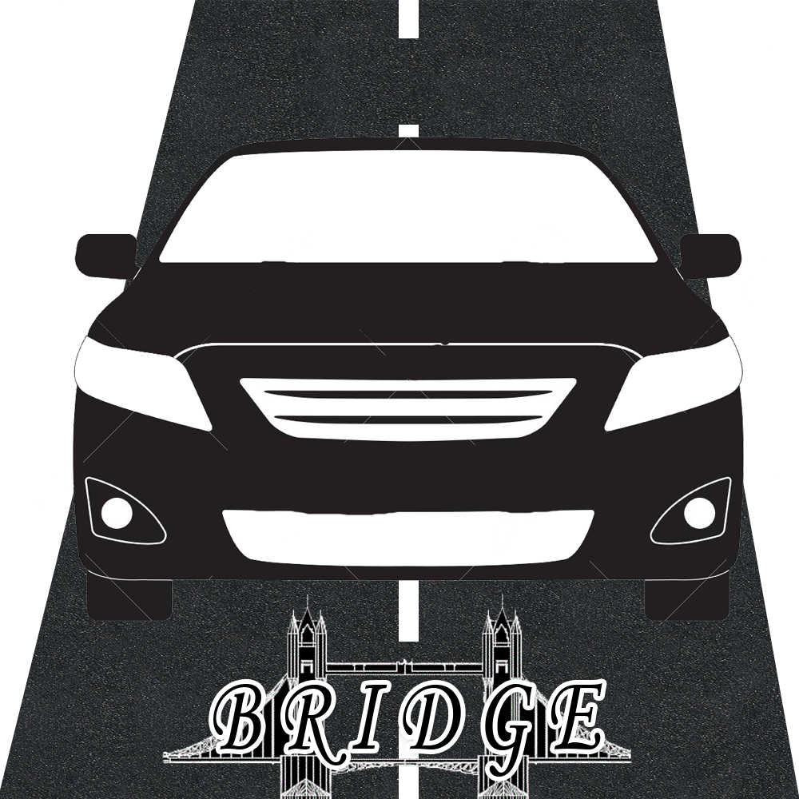

<mat-sidenav-container class="sidenav-container">
  <mat-sidenav #drawer class="sidenav" fixedInViewport="true"
               [ngClass]="{hidden: !((isHandset$ | async) ||  (isSmall$ | async))}"
               [attr.role]="(isHandset$ | async) ||  (isSmall$ | async) ? 'dialog' : 'navigation'"
               [mode]="(isHandset$ | async) ||  (isSmall$ | async) ? 'over' : 'side'"
               [opened]="!((isHandset$ | async) ||  (isSmall$ | async))">
    <mat-toolbar color="secondary">Bridge</mat-toolbar>
    <app-nav-links></app-nav-links>
  </mat-sidenav>
  <mat-sidenav-content>
    <mat-toolbar class="h-auto pt-2 pb-2 col-12">
      <div class="d-flex justify-content-start col-6 col-sm-4">
        <div class="col-4">
          
        </div>
        <mat-card-content class="col-8">
          <mat-card-title class="mb-1">Bridge</mat-card-title>
          <mat-card-subtitle class="mb-1"><i>"El carro perfecto a la puerta de tu casa"</i></mat-card-subtitle>
        </mat-card-content>
      </div>
      <span class="spacer"></span>
      <button mat-stroked-button *ngIf="isLoggedIn$ | async" (click)="setLargeFont(false)" [matTooltip]="'Fuente normal'"><i
        class="fas fa-font"></i>
      </button>
      <button mat-stroked-button *ngIf="isLoggedIn$ | async" (click)="setLargeFont(true)" [matTooltip]="'Fuente grande'" class="mx-2"><i
        class="fas fa-font fa-2x"></i></button>
      <i class="mx-1 far" *ngIf="isLoggedIn$ | async" [ngClass]="{'fa-eye-slash': accessibility === true, 'fa-eye': accessibility === false }"
         [matTooltip]="'Tema de accesibilidad visual'"></i>
      <mat-slide-toggle *ngIf="isLoggedIn$ | async" [color]="'dark'" [checked]="accessibility" (change)="setAccesibility()"></mat-slide-toggle>
    </mat-toolbar>
    <mat-toolbar class="fondoNegro"><!--color="secondary"-->
      <button
        type="button"
        aria-label="Toggle sidenav"
        mat-icon-button
        (click)="drawer.toggle()"
        *ngIf="(isHandset$ | async) ||  (isSmall$ | async)">
        <mat-icon aria-label="Side nav toggle icon"><i class="fas fa-bars fa-lg"></i></mat-icon>
      </button>
      <app-top-nav [ngClass]="{hidden: (isHandset$ | async) || (isSmall$ | async)}"></app-top-nav>
      <span class="spacer"></span>
      <app-user-menu [ngClass]="{hidden: !(isLoggedIn$ | async)}" class="mx-1"></app-user-menu>
      <app-unsigned-user-menu [ngClass]="{hidden: (isLoggedIn$ | async)}" class="mx-1"></app-unsigned-user-menu>
    </mat-toolbar>
    <ng-content></ng-content>
    <div class="mb-5"></div>
    <app-footer class="mt-5"></app-footer>
  </mat-sidenav-content>
</mat-sidenav-container>
